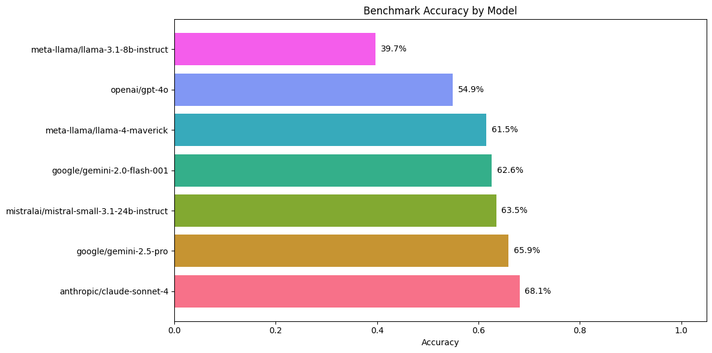
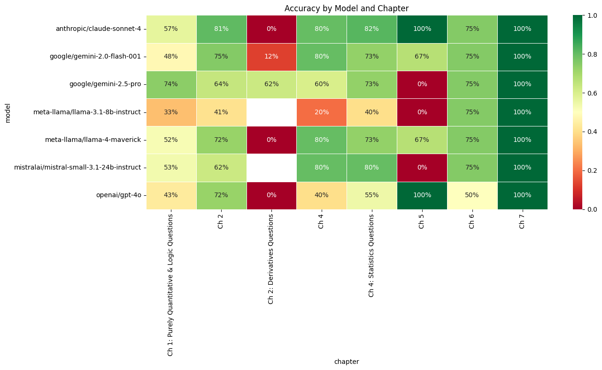
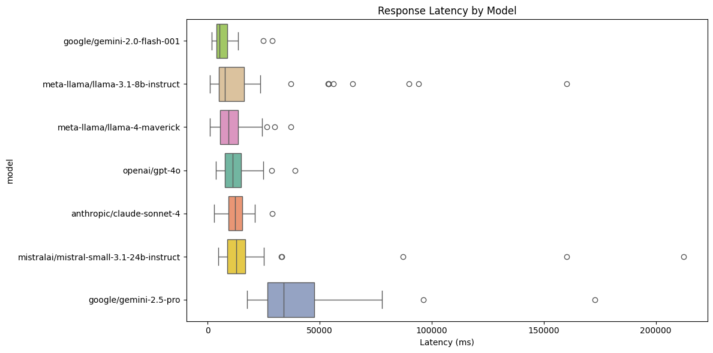
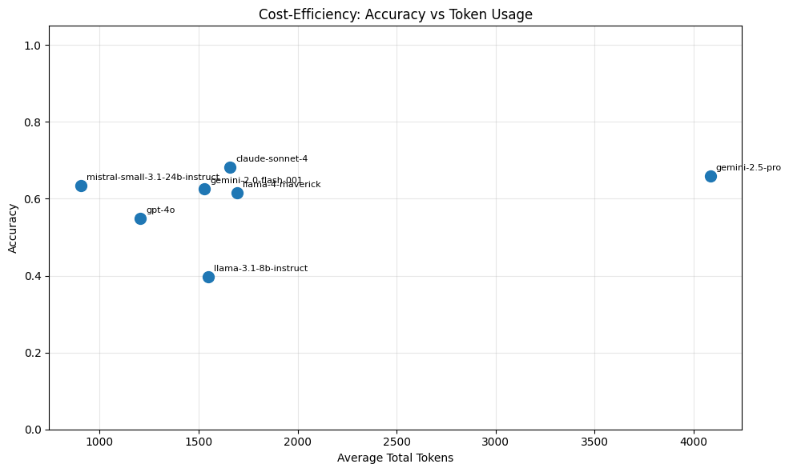
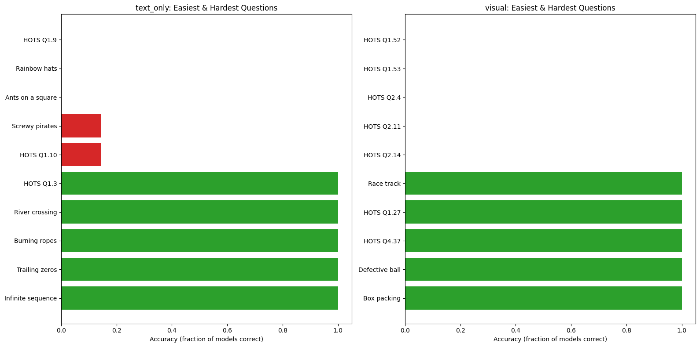

02. LLM Benchmark Analysis#
Analysis of benchmark results from running quantitative finance interview questions against multiple LLMs via OpenRouter.
from pathlib import Path
import matplotlib.pyplot as plt
import pandas as pd
import plotly.express as px
import seaborn as sns
from settings import config
DATA_DIR = config("DATA_DIR")
OUTPUT_DIR = config("OUTPUT_DIR")
RESULTS_DIR = DATA_DIR / "benchmark_results"
RESULTS_CSV = RESULTS_DIR / "benchmark_results.csv"
Load Results#
df = pd.read_csv(RESULTS_CSV)
df["is_correct"] = df["is_correct"].astype(bool)
print(
f"Loaded {len(df)} results across {df['model'].nunique()} models "
f"and {df['question_id'].nunique()} questions"
)
df.head()
Loaded 581 results across 7 models and 91 questions
| question_id | model | question_type | title | source_book | chapter | difficulty | raw_response | extracted_answer | reference_answer | grader_verdict | grader_explanation | is_correct | latency_ms | prompt_tokens | completion_tokens | total_tokens | error | timestamp | |
|---|---|---|---|---|---|---|---|---|---|---|---|---|---|---|---|---|---|---|---|
| 0 | text_only_q010 | openai/gpt-4o | text_only | Calendar cubes | green_book | Ch 2 | NaN | To solve this problem, we need to determine ho... | Die 1: 0, 1, 2, 3, 4, 5; Die 2: 0, 1, 2, 6, 7,... | Dice 1: 0,1,2,3,4,5; Dice 2: 0,1,2,6,7,8 (use ... | YES | The candidate's answer is mathematically equiv... | True | 17961.313209 | 287 | 671 | 958 | NaN | 2026-02-26T12:44:49.746427+00:00 |
| 1 | text_only_q008 | openai/gpt-4o | text_only | Horse race | green_book | Ch 2 | NaN | To solve this problem, we need to determine th... | 7 races | 7 races | YES | The candidate's answer matches the reference a... | True | 7812.676041 | 224 | 441 | 665 | NaN | 2026-02-26T12:44:49.744348+00:00 |
| 2 | visual_q018 | openai/gpt-4o | visual | HOTS Q2.12 | heard_on_the_street | Ch 2: Derivatives Questions | * | To compare the delta of a standard European ca... | The delta of a down-and-out call is generally ... | Power option pricing: uses adjusted Black-Scho... | NO | The candidate's answer discusses down-and-out ... | False | 17173.698333 | 1551 | 543 | 2094 | NaN | 2026-02-26T12:44:49.745842+00:00 |
| 3 | visual_q017 | openai/gpt-4o | visual | HOTS Q2.11 | heard_on_the_street | Ch 2: Derivatives Questions | * | To understand how the price of a European digi... | The price of a European digital option increas... | Call price is asymptotic to a line with slope ... | NO | The candidate's answer addresses a different p... | False | 13634.369917 | 1324 | 451 | 1775 | NaN | 2026-02-26T12:44:49.744356+00:00 |
| 4 | text_only_q009 | openai/gpt-4o | text_only | Infinite sequence | green_book | Ch 2 | NaN | The problem states that the infinite sequence ... | \(\sqrt{2}\) | sqrt(2) | YES | The candidate's answer is mathematically equiv... | True | 5052.201209 | 186 | 198 | 384 | NaN | 2026-02-26T12:44:49.745836+00:00 |
Overall Accuracy by Model#
summary = (
df.groupby("model")
.agg(
total=("is_correct", "count"),
correct=("is_correct", "sum"),
accuracy=("is_correct", "mean"),
avg_latency_ms=("latency_ms", "mean"),
avg_tokens=("total_tokens", "mean"),
)
.sort_values("accuracy", ascending=False)
.reset_index()
)
summary.style.format(
{"accuracy": "{:.1%}", "avg_latency_ms": "{:.0f}", "avg_tokens": "{:.0f}"}
)
| model | total | correct | accuracy | avg_latency_ms | avg_tokens | |
|---|---|---|---|---|---|---|
| 0 | anthropic/claude-sonnet-4 | 91 | 62 | 68.1% | 12625 | 1659 |
| 1 | google/gemini-2.5-pro | 91 | 60 | 65.9% | 40187 | 4084 |
| 2 | mistralai/mistral-small-3.1-24b-instruct | 63 | 40 | 63.5% | 19928 | 904 |
| 3 | google/gemini-2.0-flash-001 | 91 | 57 | 62.6% | 6518 | 1530 |
| 4 | meta-llama/llama-4-maverick | 91 | 56 | 61.5% | 10234 | 1695 |
| 5 | openai/gpt-4o | 91 | 50 | 54.9% | 12303 | 1206 |
| 6 | meta-llama/llama-3.1-8b-instruct | 63 | 25 | 39.7% | 17901 | 1549 |
fig, ax = plt.subplots(figsize=(12, 6))
colors = sns.color_palette("husl", len(summary))
bars = ax.barh(summary["model"], summary["accuracy"], color=colors)
ax.set_xlabel("Accuracy")
ax.set_title("Benchmark Accuracy by Model")
ax.set_xlim(0, 1.05)
for bar, val in zip(bars, summary["accuracy"]):
ax.text(
bar.get_width() + 0.01,
bar.get_y() + bar.get_height() / 2,
f"{val:.1%}",
va="center",
)
plt.tight_layout()
fig.savefig(OUTPUT_DIR / "accuracy_by_model.png", dpi=150, bbox_inches="tight")
plt.show()

Accuracy by Model and Question Type (Text vs Visual)#
type_pivot = (
df.groupby(["model", "question_type"])
.agg(
total=("is_correct", "count"),
correct=("is_correct", "sum"),
accuracy=("is_correct", "mean"),
)
.reset_index()
.pivot_table(index="model", columns="question_type", values="accuracy")
)
type_pivot.style.format("{:.1%}")
| question_type | text_only | visual |
|---|---|---|
| model | ||
| anthropic/claude-sonnet-4 | 79.4% | 42.9% |
| google/gemini-2.0-flash-001 | 73.0% | 39.3% |
| google/gemini-2.5-pro | 71.4% | 53.6% |
| meta-llama/llama-3.1-8b-instruct | 39.7% | nan% |
| meta-llama/llama-4-maverick | 68.3% | 46.4% |
| mistralai/mistral-small-3.1-24b-instruct | 63.5% | nan% |
| openai/gpt-4o | 61.9% | 39.3% |
melted = type_pivot.reset_index().melt(
id_vars="model", var_name="question_type", value_name="accuracy"
)
fig = px.bar(
melted,
x="model",
y="accuracy",
color="question_type",
barmode="group",
title="Text-Only vs Visual Question Accuracy by Model",
labels={"accuracy": "Accuracy", "model": "Model"},
)
fig.update_layout(yaxis_range=[0, 1])
fig.write_html(str(OUTPUT_DIR / "text_vs_visual.html"))
try:
fig.write_image(str(OUTPUT_DIR / "text_vs_visual.png"))
except Exception:
pass
fig.show()
Accuracy Heatmap by Model and Chapter#
chapter_pivot = (
df.groupby(["model", "chapter"])
.agg(accuracy=("is_correct", "mean"), count=("is_correct", "count"))
.reset_index()
.pivot_table(index="model", columns="chapter", values="accuracy")
)
if not chapter_pivot.empty:
fig, ax = plt.subplots(figsize=(14, 8))
sns.heatmap(
chapter_pivot,
annot=True,
fmt=".0%",
cmap="RdYlGn",
ax=ax,
vmin=0,
vmax=1,
linewidths=0.5,
)
ax.set_title("Accuracy by Model and Chapter")
plt.tight_layout()
fig.savefig(OUTPUT_DIR / "accuracy_heatmap.png", dpi=150, bbox_inches="tight")
plt.show()

Accuracy by Difficulty#
df_d = df[df["difficulty"].notna() & (df["difficulty"] != "") & (df["difficulty"] != "nan")]
if not df_d.empty:
diff_pivot = (
df_d.groupby(["model", "difficulty"])
.agg(accuracy=("is_correct", "mean"), count=("is_correct", "count"))
.reset_index()
.pivot_table(index="model", columns="difficulty", values="accuracy")
)
diff_pivot.style.format("{:.1%}")
else:
print("No difficulty data available.")
Accuracy by Source Book#
book_pivot = (
df.groupby(["model", "source_book"])
.agg(accuracy=("is_correct", "mean"), count=("is_correct", "count"))
.reset_index()
.pivot_table(index="model", columns="source_book", values="accuracy")
)
book_pivot.style.format("{:.1%}")
| source_book | green_book | heard_on_the_street |
|---|---|---|
| model | ||
| anthropic/claude-sonnet-4 | 81.6% | 52.4% |
| google/gemini-2.0-flash-001 | 75.5% | 47.6% |
| google/gemini-2.5-pro | 61.2% | 71.4% |
| meta-llama/llama-3.1-8b-instruct | 41.9% | 35.0% |
| meta-llama/llama-4-maverick | 73.5% | 47.6% |
| mistralai/mistral-small-3.1-24b-instruct | 65.1% | 60.0% |
| openai/gpt-4o | 69.4% | 38.1% |
Response Latency by Model#
fig, ax = plt.subplots(figsize=(12, 6))
models_sorted = (
df.groupby("model")["latency_ms"].median().sort_values().index.tolist()
)
sns.boxplot(
data=df,
y="model",
x="latency_ms",
hue="model",
order=models_sorted,
ax=ax,
palette="Set2",
legend=False,
)
ax.set_xlabel("Latency (ms)")
ax.set_title("Response Latency by Model")
plt.tight_layout()
fig.savefig(OUTPUT_DIR / "latency_by_model.png", dpi=150, bbox_inches="tight")
plt.show()

Cost-Efficiency: Accuracy vs Token Usage#
fig, ax = plt.subplots(figsize=(10, 6))
ax.scatter(summary["avg_tokens"], summary["accuracy"], s=100, zorder=5)
for _, row in summary.iterrows():
ax.annotate(
row["model"].split("/")[-1],
(row["avg_tokens"], row["accuracy"]),
textcoords="offset points",
xytext=(5, 5),
fontsize=8,
)
ax.set_xlabel("Average Total Tokens")
ax.set_ylabel("Accuracy")
ax.set_title("Cost-Efficiency: Accuracy vs Token Usage")
ax.set_ylim(0, 1.05)
ax.grid(True, alpha=0.3)
plt.tight_layout()
fig.savefig(OUTPUT_DIR / "cost_efficiency.png", dpi=150, bbox_inches="tight")
plt.show()

Examples of Correct and Incorrect Answers#
For a selection of models, we show one question that was answered correctly and one that was answered incorrectly, along with the model’s extracted answer, the reference answer, and the grader’s explanation.
# Pick a subset of models to keep the output readable
example_models = df["model"].unique()[:3]
for model_name in example_models:
model_df = df[df["model"] == model_name]
correct = model_df[model_df["is_correct"]].head(1)
incorrect = model_df[~model_df["is_correct"]].head(1)
print(f"\n{'='*70}")
print(f"Model: {model_name}")
print("=" * 70)
if not correct.empty:
r = correct.iloc[0]
print(f"\n CORRECT example: {r['title']} ({r['question_id']})")
print(f" Extracted answer : {str(r['extracted_answer'])[:300]}")
print(f" Reference answer : {str(r['reference_answer'])[:300]}")
print(f" Grader : {r['grader_explanation']}")
if not incorrect.empty:
r = incorrect.iloc[0]
print(f"\n INCORRECT example: {r['title']} ({r['question_id']})")
print(f" Extracted answer : {str(r['extracted_answer'])[:300]}")
print(f" Reference answer : {str(r['reference_answer'])[:300]}")
print(f" Grader : {r['grader_explanation']}")
======================================================================
Model: openai/gpt-4o
======================================================================
CORRECT example: Calendar cubes (text_only_q010)
Extracted answer : Die 1: 0, 1, 2, 3, 4, 5; Die 2: 0, 1, 2, 6, 7, 8 (9 is represented by flipping 6)
Reference answer : Dice 1: 0,1,2,3,4,5; Dice 2: 0,1,2,6,7,8 (use 6 upside down as 9)
Grader : The candidate's answer is mathematically equivalent to the reference answer.
INCORRECT example: HOTS Q2.12 (visual_q018)
Extracted answer : The delta of a down-and-out call is generally lower than a standard call, especially near the barrier.
Reference answer : Power option pricing: uses adjusted Black-Scholes with power parameter a; delta approaches a*S^(a-1) deep ITM
Grader : The candidate's answer discusses down-and-out call options, which are unrelated to the reference answer's focus on power options and their delta.
======================================================================
Model: anthropic/claude-sonnet-4
======================================================================
CORRECT example: Calendar cubes (text_only_q010)
Extracted answer : Die A: {0, 1, 2, 4, 5, 6}, Die B: {1, 2, 3, 7, 8, 9}
Reference answer : Dice 1: 0,1,2,3,4,5; Dice 2: 0,1,2,6,7,8 (use 6 upside down as 9)
Grader : The candidate's answer is mathematically equivalent because it contains the necessary digits to represent all days from 01 to 31, with the shared digits 1 and 2, and the ability to represent 6 and 9 on either die.
INCORRECT example: Message delivery (text_only_q012)
Extracted answer : Send the box with your lock → colleague adds their lock and returns → you remove your lock and send back → colleague removes their lock and accesses the document.
Reference answer : Send document in locked box; recipient adds their lock; sender removes first lock; recipient opens
Grader : The candidate's answer requires four trips instead of the reference answer's three, and also requires the sender to have the recipient's lock, which is not a reasonable assumption.
======================================================================
Model: google/gemini-2.5-pro
======================================================================
CORRECT example: Trailing zeros (text_only_q007)
Extracted answer : 24
Reference answer : 24 trailing zeros
Grader : The candidate's answer is numerically correct and equivalent to the reference answer.
INCORRECT example: HOTS Q4.35 (visual_q025)
Extracted answer : I'm now checking the calculated area for the favorable region using both cases and the
Reference answer : Probability of forming a polygon from n pieces = 1 - n/2^(n-1); for n=3: 1/4
Grader : The candidate's answer discusses calculating the area of a favorable region, which is not directly related to the probability of forming a polygon from n pieces as stated in the reference answer.
Easiest and Hardest Questions by Type#
We compute per-question accuracy (fraction of models that got the question right) and show the top-5 easiest and top-5 hardest for each question type.
question_acc = (
df.groupby(["question_id", "question_type", "title"])
.agg(
models_correct=("is_correct", "sum"),
models_total=("is_correct", "count"),
accuracy=("is_correct", "mean"),
)
.reset_index()
.sort_values("accuracy")
)
for qtype in ["text_only", "visual"]:
subset = question_acc[question_acc["question_type"] == qtype]
if subset.empty:
continue
easiest = subset.nlargest(5, "accuracy")
hardest = subset.nsmallest(5, "accuracy")
print(f"\n{'='*70}")
print(f"Question type: {qtype}")
print("=" * 70)
print(f"\n Top 5 EASIEST (highest accuracy across models):")
for _, r in easiest.iterrows():
print(
f" {r['accuracy']:.0%} ({r['models_correct']:.0f}/{r['models_total']:.0f}) "
f"- {r['title']} [{r['question_id']}]"
)
print(f"\n Top 5 HARDEST (lowest accuracy across models):")
for _, r in hardest.iterrows():
print(
f" {r['accuracy']:.0%} ({r['models_correct']:.0f}/{r['models_total']:.0f}) "
f"- {r['title']} [{r['question_id']}]"
)
======================================================================
Question type: text_only
======================================================================
Top 5 EASIEST (highest accuracy across models):
100% (7/7) - HOTS Q1.3 [text_only_q046]
100% (7/7) - River crossing [text_only_q003]
100% (7/7) - Burning ropes [text_only_q006]
100% (7/7) - Trailing zeros [text_only_q007]
100% (7/7) - Infinite sequence [text_only_q009]
Top 5 HARDEST (lowest accuracy across models):
0% (0/7) - HOTS Q1.9 [text_only_q051]
0% (0/7) - Rainbow hats [text_only_q032]
0% (0/7) - Ants on a square [text_only_q025]
14% (1/7) - Screwy pirates [text_only_q001]
14% (1/7) - HOTS Q1.10 [text_only_q052]
======================================================================
Question type: visual
======================================================================
Top 5 EASIEST (highest accuracy across models):
100% (5/5) - Race track [visual_q004]
100% (5/5) - HOTS Q1.27 [visual_q008]
100% (5/5) - HOTS Q4.37 [visual_q027]
100% (5/5) - Defective ball [visual_q001]
100% (5/5) - Box packing [visual_q002]
Top 5 HARDEST (lowest accuracy across models):
0% (0/5) - HOTS Q1.52 [visual_q013]
0% (0/5) - HOTS Q1.53 [visual_q014]
0% (0/5) - HOTS Q2.4 [visual_q016]
0% (0/5) - HOTS Q2.11 [visual_q017]
0% (0/5) - HOTS Q2.14 [visual_q019]
fig, axes = plt.subplots(1, 2, figsize=(16, 8), sharey=False)
for idx, qtype in enumerate(["text_only", "visual"]):
subset = question_acc[question_acc["question_type"] == qtype]
if subset.empty:
continue
# Combine easiest and hardest
easiest = subset.nlargest(5, "accuracy").assign(category="Easiest")
hardest = subset.nsmallest(5, "accuracy").assign(category="Hardest")
combined = pd.concat([hardest, easiest]).reset_index(drop=True)
ax = axes[idx]
colors = ["#d62728" if c == "Hardest" else "#2ca02c" for c in combined["category"]]
ax.barh(combined["title"], combined["accuracy"], color=colors)
ax.set_xlabel("Accuracy (fraction of models correct)")
ax.set_title(f"{qtype}: Easiest & Hardest Questions")
ax.set_xlim(0, 1.05)
ax.invert_yaxis()
plt.tight_layout()
fig.savefig(OUTPUT_DIR / "easiest_hardest_by_type.png", dpi=150, bbox_inches="tight")
plt.show()

Error Summary#
errors = df[df["error"].notna() & (df["error"] != "")]
if not errors.empty:
print(f"Total errors: {len(errors)} failed requests")
errors[["question_id", "model", "error"]].head(20)
else:
print("No errors recorded.")
No errors recorded.